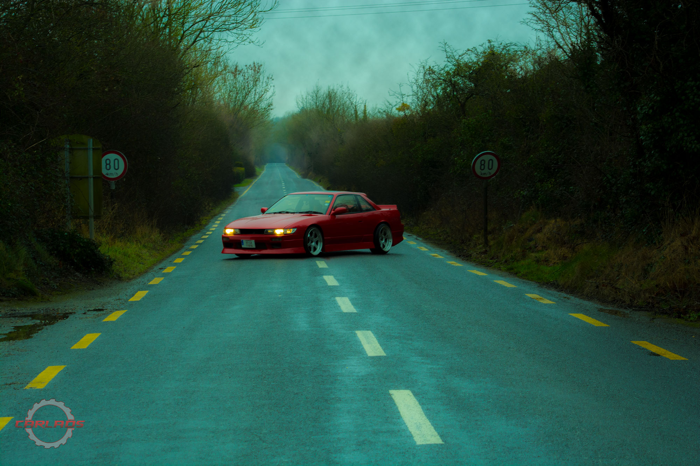
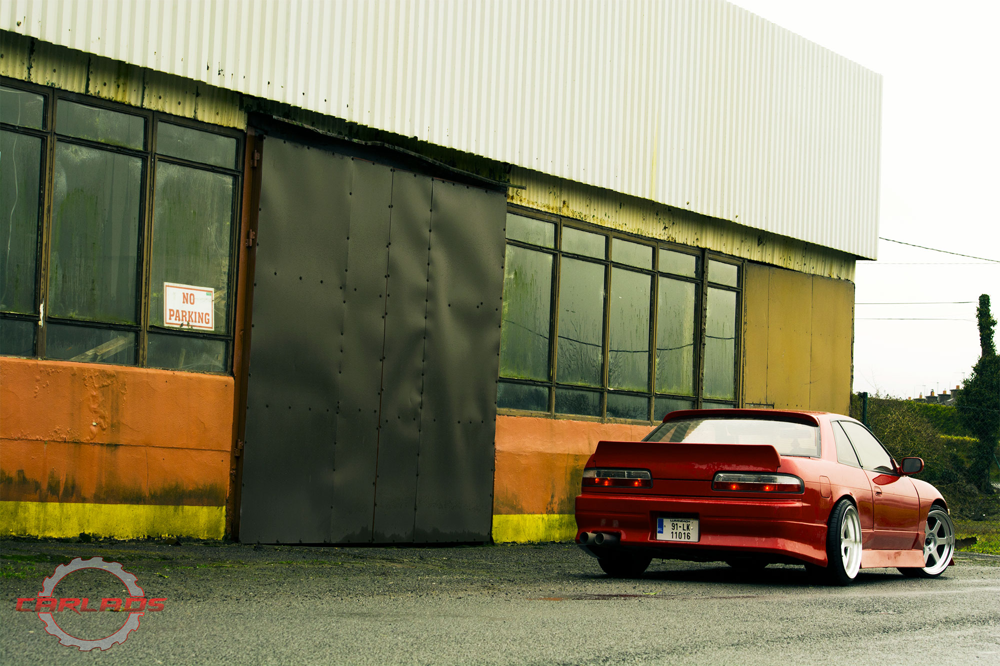
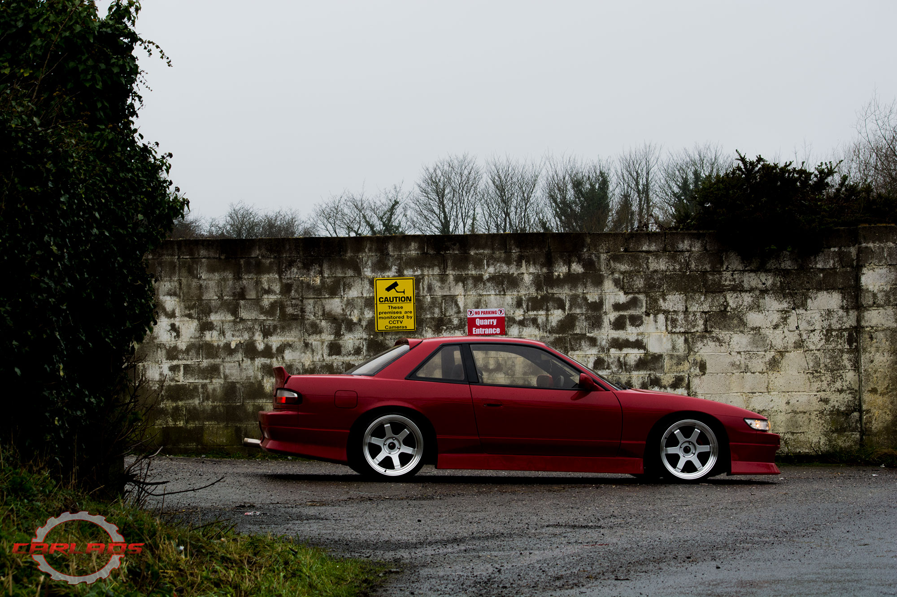
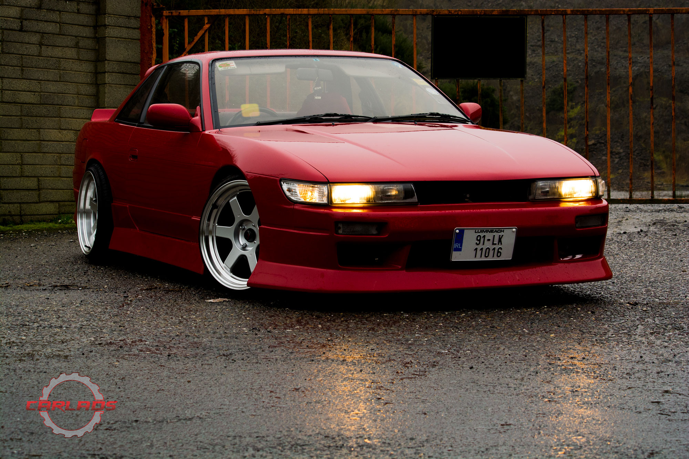

Nissan in Honda clothing
It was a cloudy day of January, a Sunday to be exact. The temperature was low and a light, yet persistent, drizzle was making you just curl up in bed and stay indoors. What else can you do on a cold and damp Sunday afternoon that stay in front of the TV, with a hot beverage and enjoy your favorite programs? You could always go outside to play around with a 1991 Nissan PS13.
Thomas, who owns this gem of a car, a long time Japanese cars enthusiast, told us that he always loved this model even though he, at one point, owned a JZX100 Chaser. He sold this Chase and figured it was about time to get his hands on a PS13. A long and adventurous search began, finding a good condition, unabused PS13 is no easy task.
Months have passed and "the right one" still didn't turn up, so Thomas started to look for one it Japan, thinking that there is no better source for a Japanese car. Turned out, after weeks of watching online auctions, that there were not one, but 3 PS13s, straight from Japan, just sitting in a shed not more than 12 miles from his place. A phone call and a 12 miles drive later, there she was! A nice, clean, rust free PS13 just waiting for it's new owner.
The car was in good overall shape, but there was rooms for improvements, so Thomas decided it needed a new paint and some modifications. Most of the work was done by Thomas and his father, who's a panel beater/spray painter by trade, they fitted new bumpers and skirts, new boot spoiler, all around lights and a new set of rims to complete the overall look that he was going for. The paint, and this is a bit controversial for all Nissan guys, is borrowed from Honda. Thomas is saying that there is no better "red" out there than the Milano Red by Honda.
He did not forget about mechanical work either, the PS13 also receiving a complete service with new air induction kit, a nice front mount intercooler and a set of coilovers to reach the stance he desired. All this work was done within 2 months, the car going into storage over the winter, but Thomas tells us that he has more plans concerning the car's interior and, naturally, engine mods.
We will keep you posted!
